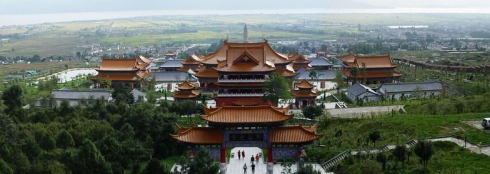
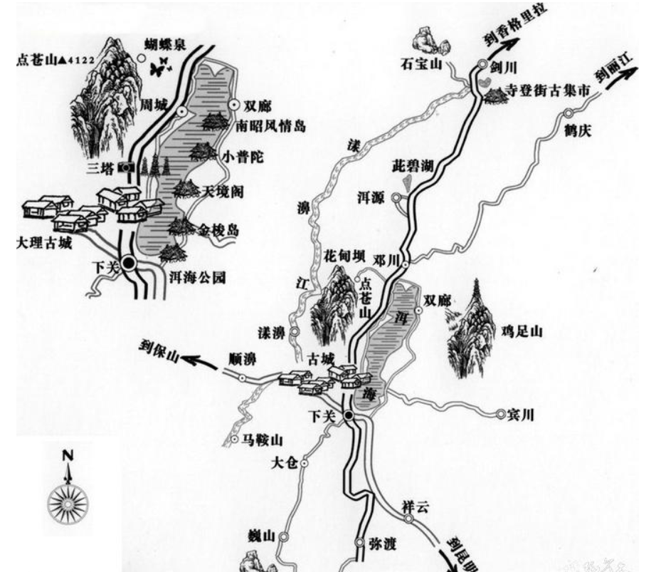

大理欢迎您！
特色推荐：
苍山洱海以唐代三塔、蝴蝶泉、南诏德化碑、三月街、喜洲白族民居为主;石宝山以石窟雕刻、宗教古建、丹霞地貌、森林景观以及一年一度的石宝山歌会为主;鸡足山以“绝顶四观”和“八景”最为著名;巍宝山以道教文化和巍山古城为主;此碧湖以地热温泉和高原湖泊景观为主，还可享受温泉休闲疗养服务。
节庆:
正月初九“龙灯会”，农历二月初十“彝族哑巴会”，农历六月二十五“彝族、白族火把节”，农历二月初八“二月八太子会”，夏历三月十五至二十苍山脚下“三月街”，农历四月十四至十六“红山本主庙会”，农历七月二十三日至八月二十三“耍海会”，农历六月十五“绕海会”，农历七月二十三“海灯会”，农历七月二十七日至八月一“石宝山歌会”，农历四月十五蝴蝶泉“蝴蝶会”。
最佳游览时间:
四季皆宜，但白族的节日和盛会一般集中在3-4月份，所以每年的3-4月份游玩大理更佳。
购物推荐:
果脯、乳扇、漾濞核桃、黄焖鸡、生皮、卷粉、米线、饵丝、喜洲粑粑、大理石制品、兰花、茶花、木雕、银器、扎染等。
景区游览图
